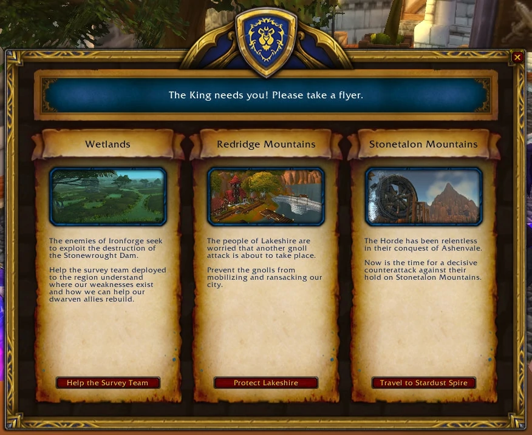

Answer to the Events of Azeroth
The Hero's Call Board in Stormwind is a quest board located in the Trade District of the city. It is a large bulletin board that offers a variety of quests to players, typically aimed at characters who are at or around the recommended level for the quest. The Hero's Call Board is a useful tool for players who are looking for new quests to complete, as it offers a wide range of options that can help them progress through the game.
Events
Choose the adventure and explore the world of Azeroth
